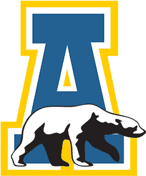

NCHC
 Colorado College
Colorado College
Colorado College is 7-4-1 and 13th in the NPI. Across 500 simulated seasons its median NPI finish is 15th, with a 95% range of 4th to 33rd. ELO expects about 7 wins in the next 10.
Next 10 games
- Fri, Nov 20
 vs Miami68%
vs Miami68% - Sat, Nov 21vs Miami68%
- Fri, Nov 27

vs Alaska74% - Sat, Nov 28vs Alaska74%
- Fri, Dec 4
 at Arizona State53%
at Arizona State53% - Sat, Dec 5at Arizona State53%
- Fri, Dec 11
 vs St. Thomas65%
vs St. Thomas65% - Sat, Dec 12vs St. Thomas65%
- Thu, Dec 31at Alaska Anchorage77%
- Fri, Jan 1at Alaska Anchorage77%
Win chances from ELO; the dot is stronger the more lopsided the game.
Projected NPI finish
500 simulated seasons, remaining games decided by ELO win chances. Dashed line: median. Shaded: 95% range.